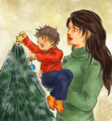
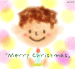
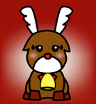
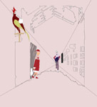
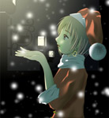
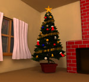

|  |
アフ |
★ コメント ★
無常にもタイムオーバーゆえ、描き込みが甘いですがご容赦を。次からはせめて３時間以上かけてやるようにします・・・！。 |
|  |
カヨコ |
★ コメント ★
１２月が１年の中で一番大好きです。 |
|
LOBSTER |
★ コメント ★
絵本の1ページ風にしてみたつもりです。ツリーがあやしげだったり、
飾りが全部一緒だったり
本当はトナカイも作るつもりだったのに作れなかったり・・・・
まだまだ修行が足りませんね。 |
 |
水琴 |
★ コメント ★
もっとじっくり時間かけて作りたかったです(汗)。いっぱいいっぱいでした。 |
 |
OZ |
★ コメント ★
初Photoshop作品です（前回は〆切間に合わなかったので（泣）色んな機能があるなぁと面白がって色々試してたら画質がかなり悪くなってしまいました…汗 |
 |
セイセン |
★ コメント ★
今回はほとんど３Dソフトに頼りました。
オモチャっぽい感じを表現しようと作ってみました。成功しているかな？ |
|  |
しんや |
★ コメント ★
真っ赤なお鼻のトナカイさんはいつもみんなの人気者。 |
 |
わさび |
★ コメント ★
大学祭に提出したカメ三を
赤っぱなのトナカイにしました。 |
|
ＬＯＶＥＳＯＵＮＤ |
★ コメント ★
朝の画像を夜に見立てるのがちょっと工夫したところです。
手を繋いで家に帰るという設定です。 |
|
|  |
姉崎陸高 |
★ コメント ★
クリスマスでも働くもの １．サンタクロース ２．コウノトリ ３．死神
普通のクリスマスというのは少し面白くないので、入院中に考えていたことを絵にしてみました。あえて資料を見ないでコウノトリを書いてみたんですが、実際のと較べてみると…この色合いじゃ赤ん坊をさらっていく鳥みたいになってますね。 |
 |
降雪 |
★ コメント ★
すいません、すいません。
いろいろと間に合わせです。
すごく変です。また、画面暗いです。
もうちょっと丁寧に作りたいなあと思います。精進します。 |
|  |
西の |
★ コメント ★
クリスマス→雪→サンタさん、と、まぁこんな安直な考えから描きはじめたものなのですが、とりあえず自分らしいものができたと思います。工夫したところは特にないのですが(笑)光のあたり方は細かく描けたかと？次回は昼の絵を描きたいです（しっかりと背景が描けない･･･） |
 |
サク |
★ コメント ★
テーマがクリスマスなので比較的楽に描けたかもしれません。
そして、ちょっと（？）ＣＧに慣れてきた気もします。。。（汗） |
 |
shell |
★ コメント ★
背景が幻想的（？）で結構気に入ってたり。久しぶりにまともな絵を描いた気がします・・・ |
 |
steven |
★ コメント ★
えー、クリスマスとは関係ないっぽい気がするけど送ります。作者の気持ちを代弁してるわけでは…（苦笑 |
 |
夜月 星 |
★ コメント ★
突っ込み所満載ですし、後悔しかありませんが、一応提出っす。あと、ベット、外の木、ランプ、本、サンタの靴などモデリングしましたが、PC不調によりレンダリングできず。。。せめてツリーの飾りぐらい作れよ、俺…(;´д⊂)一番突っ込みたいのは俺なので何も言わんで下さい |
|  |
電玉九 |
★ コメント ★
クリスマスなのでクリスマスツリーを作ってみました。しかしツリーに時間かかりすぎて回りの環境がショボショボに・・・（ＴＴ
とりあえずラジオシティでそれっぽくしてみたけどもう少し作り込みたかった〜。 |
|